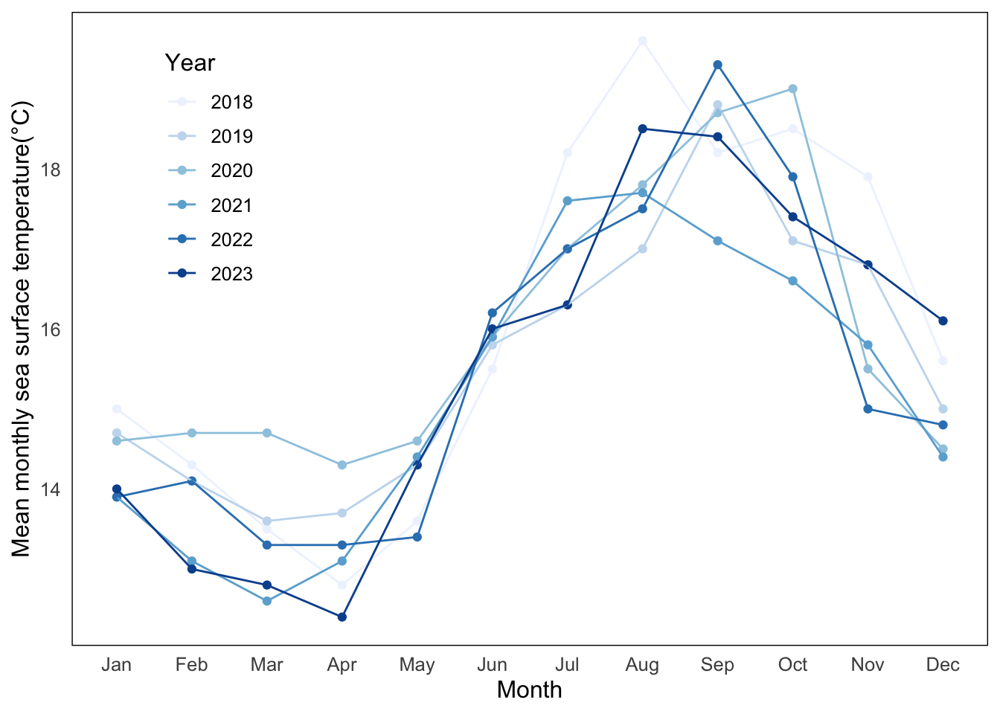
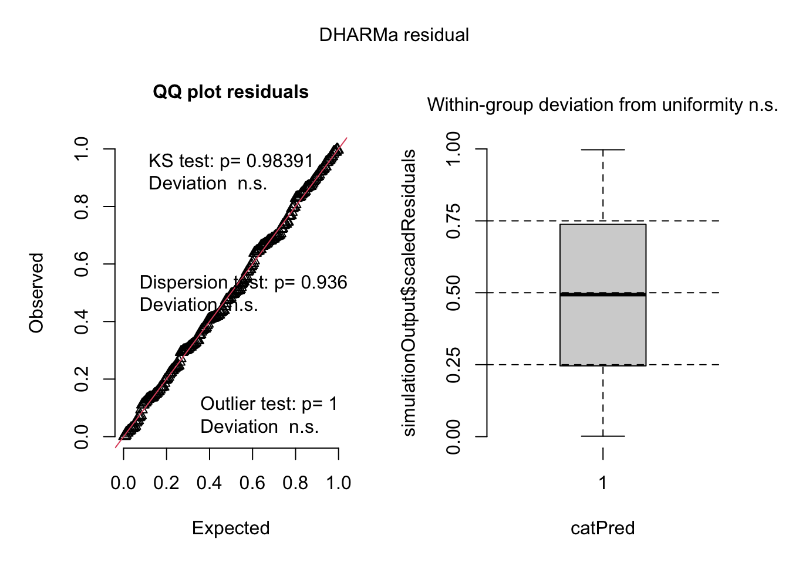
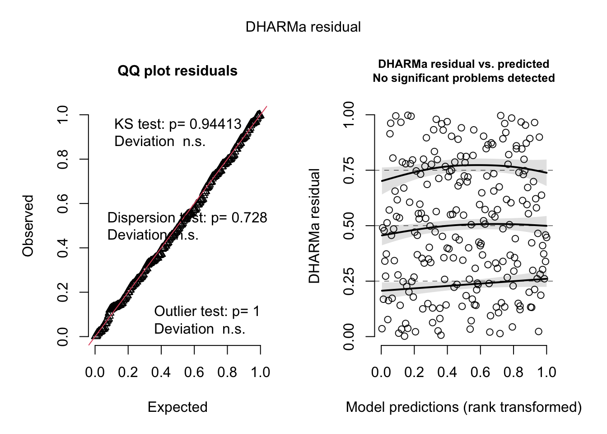
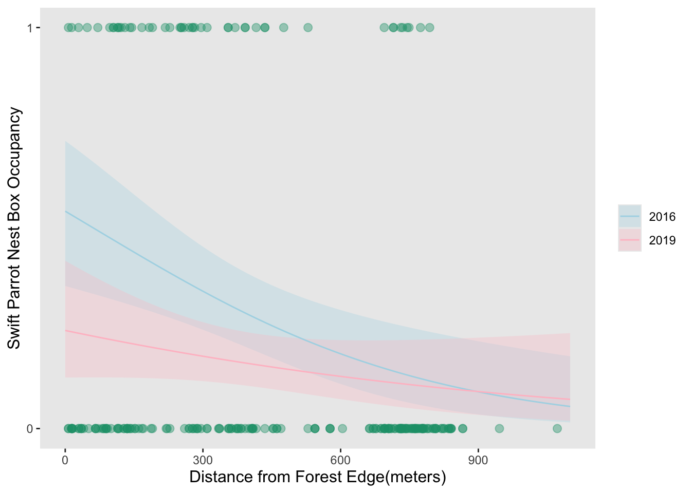

library(tidyverse) # general use
library(here) # file organization
library(gt) # creating summary tables
library(flextable) # creating summary tables
library(janitor) # cleaning data frames
library(lubridate)
library(ggplot2)
library(DHARMa)
library(MuMIn)
library(ggeffects)
sst <- read_csv(here("data", "SST_update2023.csv")) #reading in sst data
nest_boxes <- read_csv(here("data", "occdist.csv")) #reading in nest dataFinal
https://github.com/sydneymbeckett/ENVS-193DS_spring-2025_final.git
Problem 1.
a)
In part 1 they likely used a simple linear regression because they were comparing two continuous variables, the p value likely tested if there was a significant linear relationship between the two variables. In part 2 they likely used a one-way ANOVA because they were comparing one continuous variable “between sources”, which is more than 2 groups.
b) Other information that would be helpful would be the Post-HOC test which would quantify which groups actually differ from eachother in nitrogen load. And given they used a one-way ANOVA, another piece of information that would be helpful would be the F-value which represents the ratio of between group variance to within group variance. Essentially a larger F-value means the group means differ more relative to the variation within groups.
c) Part 1:
The test resulted in a rejection of the null hypothesis indicating a significant correlation between distance from headwater (km) and annual total nitrogen load (kg year-1). The relationship was evaluated using simple linear regression(test statistic, df= degrees of freedom, p=0.03, α = significance level, n=sample size). This suggests that sites farther from the headwater tended to have higher total nitrogen load.
Part 2:
We rejected the null hypothesis that there is no difference in average nitrogen load (kg year-1) between sources (urban land, atmospheric deposition, fertilizer, waste water treatment, and grasslands). This finding indicates that certain land uses or sources contribute more nitrogen to the watershed than others, which can have important implications for nutrient management. This was determined using a one-way ANOVA(F= F-statistic, p=0.02, α=significance level, df=degrees of freedom, SS=sum of squares, n=sample size). The Post-HOC test would allow us to understand which sources are contributing most and least nitrogen.
Problem 2.
a)
sst_clean <- sst |> #use the sst data frame
clean_names() |> #clean up the column names
mutate(date = ymd(date)) |> #making sure the date is read as a date
mutate(
year = (year(date)), #making the year a date
month = month(date, label = TRUE, abbr = TRUE)) |> #making the month category and using abbreviations
filter(year >= 2018) |> # only include recent 6 years)
group_by(year, month) |> #grouping by year and month
summarize(
mean_monthly_sst = round(mean(temp, na.rm = TRUE), 1), #calculate the mean monthly sst and round out to one decimal place
.groups = "drop" # ungroup after summarize
) |>
mutate(year = factor(year), #converting to a factor after filtering
month = factor(month, levels = month.abb, ordered = TRUE)) #ensure correct month ordering
sst_clean |> slice_sample(n = 5) #show 5 first rows# A tibble: 5 × 3
year month mean_monthly_sst
<fct> <ord> <dbl>
1 2020 Mar 14.7
2 2023 Feb 13
3 2021 Jun 15.9
4 2023 Aug 18.5
5 2019 Jul 16.3str(sst_clean) #show structuretibble [72 × 3] (S3: tbl_df/tbl/data.frame)
$ year : Factor w/ 6 levels "2018","2019",..: 1 1 1 1 1 1 1 1 1 1 ...
$ month : Ord.factor w/ 12 levels "Jan"<"Feb"<"Mar"<..: 1 2 3 4 5 6 7 8 9 10 ...
$ mean_monthly_sst: num [1:72] 15 14.3 13.5 12.8 13.6 15.5 18.2 19.6 18.2 18.5 ...b)
sst_clean$year <- as.factor(sst_clean$year)
str(sst_clean$year) #setting year as a factor Factor w/ 6 levels "2018","2019",..: 1 1 1 1 1 1 1 1 1 1 ...sst_clean <- sst_clean |> #making sure that month is in the corrent order
mutate(month = factor(month, levels = c("Jan", "Feb", "Mar", "Apr", "May", "Jun","Jul", "Aug", "Sep", "Oct", "Nov", "Dec")))
# base layer: ggplot
sst_plot <- ggplot(data = sst_clean, #using the sst clean data
# aesthetics: x-axis, y-axis, and color
aes(x = month,
y = mean_monthly_sst,
color = year, #color and group by year
group = year)) +
# first layer: points
geom_point() +
# second layer: line
geom_line() +
scale_color_brewer(palette = "Blues") + #creating a color gradient(this worked better because it left the legend the same as the one in the final directions)
# labels
labs(x = "Month", #x axis title
y = "Mean monthly sea surface temperature(°C)", #y axis title
color = "Year") +
theme_minimal(base_size = 12) + #text font size
theme( #controlling the other elements of the graph
panel.background = element_blank(), #panel background white
plot.background = element_blank(), #entire plot background white
axis.line = element_blank(), #removing x and y axis lines
axis.ticks = element_blank(), #remove all axis ticks
legend.position = c(0.15, 0.75), # move legend to top left
legend.background = element_rect(fill = "white", color = NA), #no legend border
panel.border = element_rect(color = "black", fill = NA, linewidth = 0.5), #creating border
panel.grid.major = element_blank(), #removing major grid lines
panel.grid.minor = element_blank() #removing minor grid lines
)
# display the plot
sst_plot
Problem 3.
a) The 1s and 0s refer to Swift Parrot occupancy of the nest boxes. With the 1 referring to occupancy and 0 referring to no occupancy in the nest box.
b) The main difference between the species is that the Swift Parrots are a native and threatened species. The Tree Martins are also native but are nest competitors with the Swift Parrots, and then Common Starlings are an invasive species and nest competitors.
c) The two seasons compared in the study are 2016 and 2019 which are breeding seasons for the Swift Parrots. They differ because in 2016 the nest boxes had been newly put in, while in 2019 the boxes were established and they could determine how the nest boxes were actually being used and by what species.
d)
| Model number | Season | Distance to forest edge | Model Description |
|---|---|---|---|
| 0 | No | No | no predictors(null model) |
| 1 | Yes | Yes | all predictors(saturated model) |
| 2 | Yes | No | GLM:Predictor variable=season |
| 3 | No | Yes | GLM:Predictor variable=distance to forest edge |
e)
#cleaning and wrangling the nest_boxes data
nest_boxes_clean <- nest_boxes |>
clean_names()# model 0: null model
model0 <- glm( #using GLM
sp ~ 1, # formula, null so using no predictor
data = nest_boxes_clean, # data frame
family = binomial#fit to a generalized linear model due to binary response variable
)
# model 1: all predictors/saturated
model1 <- glm(
sp ~ season * edge_distance, # formula using season and edge distance as predictors
data = nest_boxes_clean, # data frame
family = binomial #fit to a generalized linear model due to binary response variable
)
# model 2: season
model2 <- glm(
sp ~ season, # formula using season as predictor
data = nest_boxes_clean, #data frame
family = binomial#fit to a generalized linear model due to binary response variable
)
# model 3: distance to forest edge
model3 <- glm(
sp ~ edge_distance, # formula using edge distance as predictor
data = nest_boxes_clean, #data frame
family = binomial#fit to a generalized linear model due to binary response variable
)f)
#model 0 diagnostics:
res0 <- simulateResiduals(model0)
plot(res0)
#model 1 diagnostics
res1 <- simulateResiduals(model1)
plot(res1)
#model 2 diagnostics
res2 <- simulateResiduals(model2)
plot(res2)
#model 3 diagnostics
res3 <- simulateResiduals(model3)
plot(res3)
g) The best model, as determined by Akaike’s Information Criterion (AIC = 227), included season and edge distance as predictors of the binary response variable indicating whether a Swift Parrot occupied a nest box.
AICc(model1, #using AIC to run model selection
model2,
model3,
model0)|>
# arranging output in descending order of AIC
arrange(AICc) df AICc
model1 4 227.0325
model3 2 229.6716
model2 2 236.3744
model0 1 238.8318h)
range(nest_boxes_clean$edge_distance)[1] 7 1072#figuring out what the range is for edge distance#make predictions using ggpredict for both predictions and their interactions
mod_preds <- ggpredict(model1, terms = c("edge_distance [0:1100 by=10]", "season"))
ggplot(nest_boxes_clean, #use nest boxes clean data
aes(x = edge_distance, #x acis is edge distance
y = sp )) + #y axis is sp occupancy
geom_point(size = 2.5, #use geom point to show the data points
alpha = 0.4, #
color = "#1b9e77") + #change color of raw points
geom_ribbon(data = mod_preds, #use the module data
aes(x = x,
ymin = conf.low, #confidence interval
ymax = conf.high, #confidence interval
y = predicted,
fill = group),
inherit.aes = FALSE, #prediction line
alpha = 0.3) +
geom_line(data = mod_preds,
aes(x = x,
y = predicted,
color = group)) +
scale_y_continuous(name = "Swift Parrot Nest Box Occupancy", #y axis label
limits = c(0,1), breaks = c(0,1)) +
scale_x_continuous(name = "Distance from Forest Edge(meters)") + #x axis label
scale_fill_manual(values = c("2016" = "lightblue", "2019" = "pink")) + #manually changing fill color
scale_color_manual(values = c("2016" = "lightblue", "2019" = "pink"))+ #manually changing line color
theme(
panel.grid = element_blank(), #remove all grid lines
axis.title = element_text(size = 12), #clearer axis labels
legend.title = element_blank(), #cleaner legend
legend.position = "right" #legend on the right
)
i) Figure 1: Swift Parrot Nest Box Occupancy Declines with Increasing Distance from Forest Edge, Varying by Year This figure displays observed nest box occupancy by Swift Parrots(green points) and predicted occupancy probabilities(lines with shaded 95% confidence interval) as a function of distance from the forest edge. Data are grouped by year(2016 and 2019), with different colors to differentiate predictions for each year. The model suggests that the further the nest box from the edge of the forest, the less likely a Swift Parrot will be occupying the nest box. Stojanovic, Dejan et al. (2021). Do nest boxes breed the target species or its competitors? A case study of a critically endangered bird [Dataset]. Dryad. https://doi.org/10.5061/dryad.83bk3j9sb
j)
predictions <- ggpredict(model1, #the predictions function saves the output for later use
terms = c("edge_distance [0,900]", "season")) #using this function allows you to look at predictions together and with seasons
print(predictions) #print the predictions# Predicted probabilities of sp
season: 2016
edge_distance | Predicted | 95% CI
--------------------------------------
0 | 0.54 | 0.36, 0.72
900 | 0.09 | 0.04, 0.22
season: 2019
edge_distance | Predicted | 95% CI
--------------------------------------
0 | 0.24 | 0.13, 0.42
900 | 0.09 | 0.03, 0.23k) In 2016, the predicted probability of Swift Parrot nest box occupancy at the forest edge(0m) was 0.54((95% CI [0.36, 0.72])), whereas it dropped significantly to 0.09 (95% CI [0.04, 0.22]) at 900 m from the edge. In 2019 the occupancy was overall lower, with a probability of 0.24 (95% CI [0.13, 0.42]) at the edge and the same low probability of 0.09 (95% CI [0.03, 0.23]) at 900 m. As shown in Figure 1, Swift Parrots were more likely to occupy nest boxes closer to the forest edge, especially when they were first implemented in 2016, showing a strong negative relationship between edge distance and occupancy. This pattern may be influenced by competition, Common Starlings tend to occupy boxes near the forest edge, while Tree Martins occupy those farther away, particularly in 2019. This shows an opposing relationship between Swift Parrots and Common Starlings due to their different nest box habits. The presence of these competitors likely contributes to the overall lower occupancy by Swift Parrots due to the widespread competition from 2016-2019 which affects patterns of nest box use.
Problem 4.
a)
In my HW2 I represented my personal data using a boxplot which was a statistical way to summarize the distribution of my step count across the days of the week. In my second representation I used an affective visualization which took a more experiential approach that showed the viewers the rise and fall of physical activity and told more of a story.
The visuals are similar because they both used the same quantitative data and represented the same trend over time. They both also aimed to show a pattern of activity over time and how it can vary day to day.
In my first visualization my sample size was much smaller and so the median difference between days was much greater than when I used the data the second time with a larger sample size. Overall, I saw I trend of highest average step count on Saturday and just behind that was Tuesday, with very little variability in steps between Monday, Wednesday, Thursday and Friday.
I do think that there are some differences between visualizations as stated above becuase my sample size increased for the second one which made the step counts much less variable becuase there were less outliers.
In my first visualization I accidentally mixed up the x and y axis and put the steps as the predictor which does not make sense and so I fixed that for my affective visualization. I kept and changed my visualizations based on this feedback becuase my original predictor and response variable were incorrect and so switching those made my visualization much more accurate in describing why my step count varied over different days.